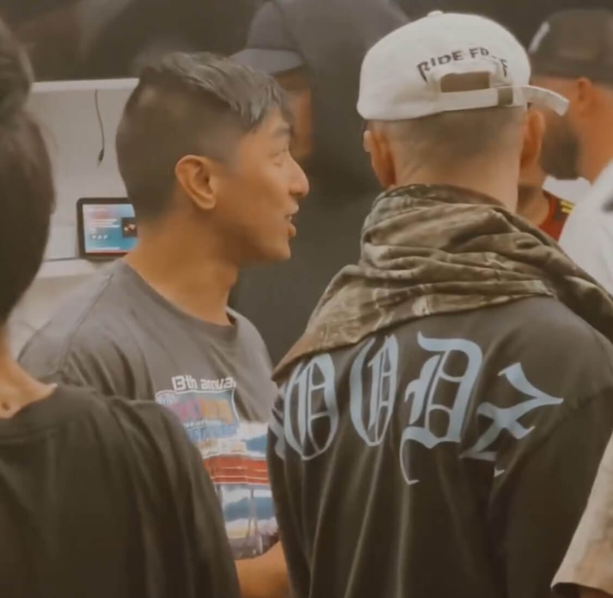
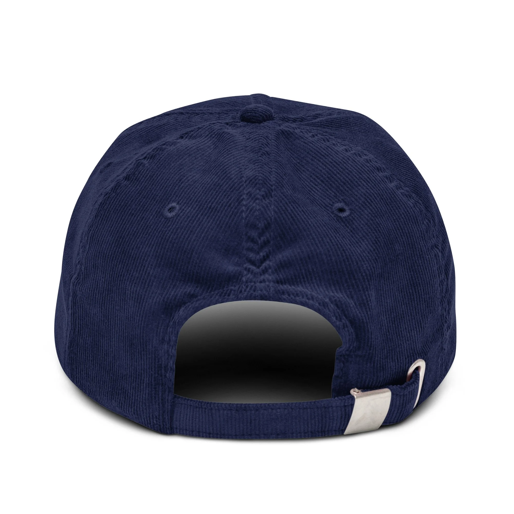
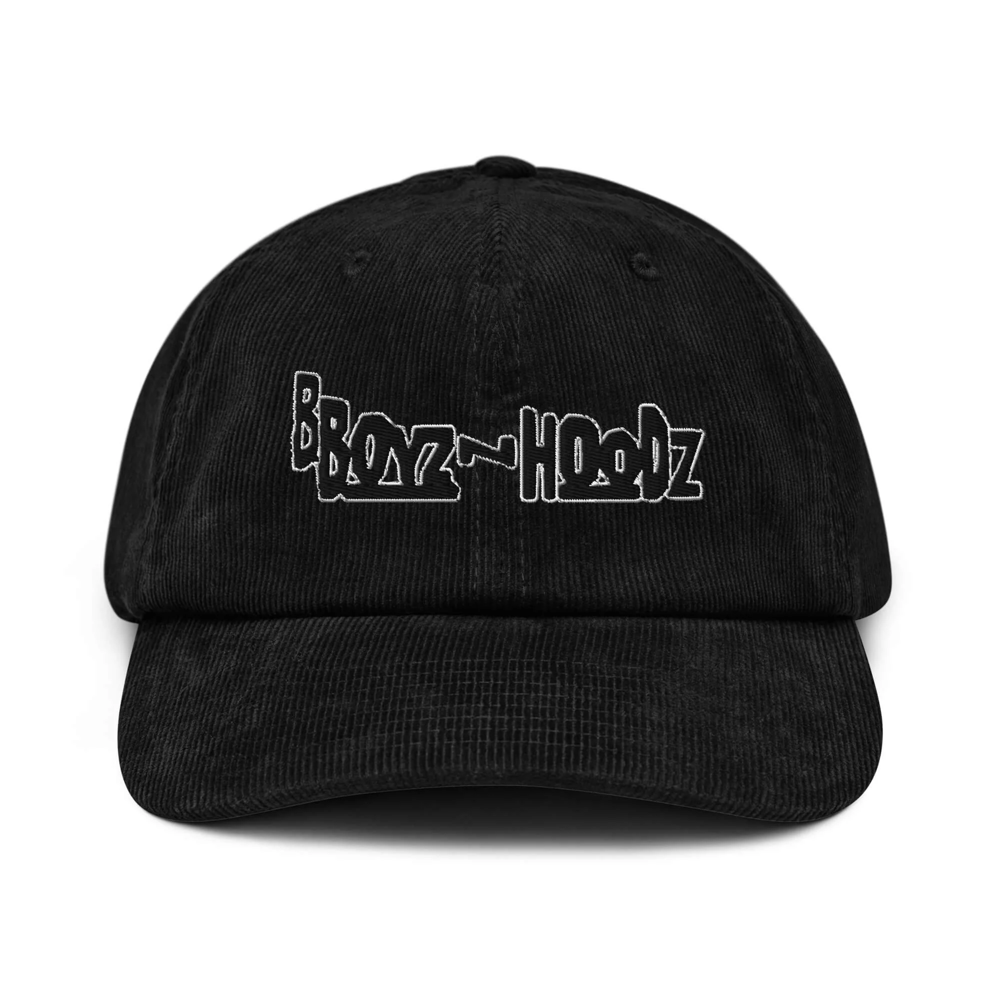
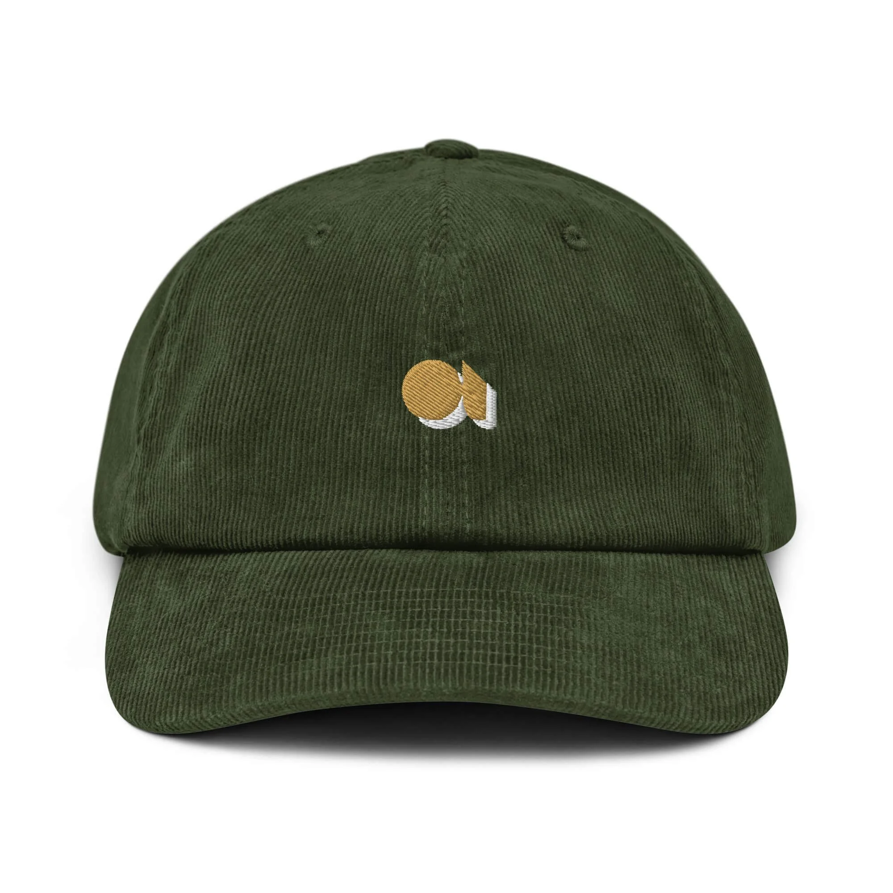
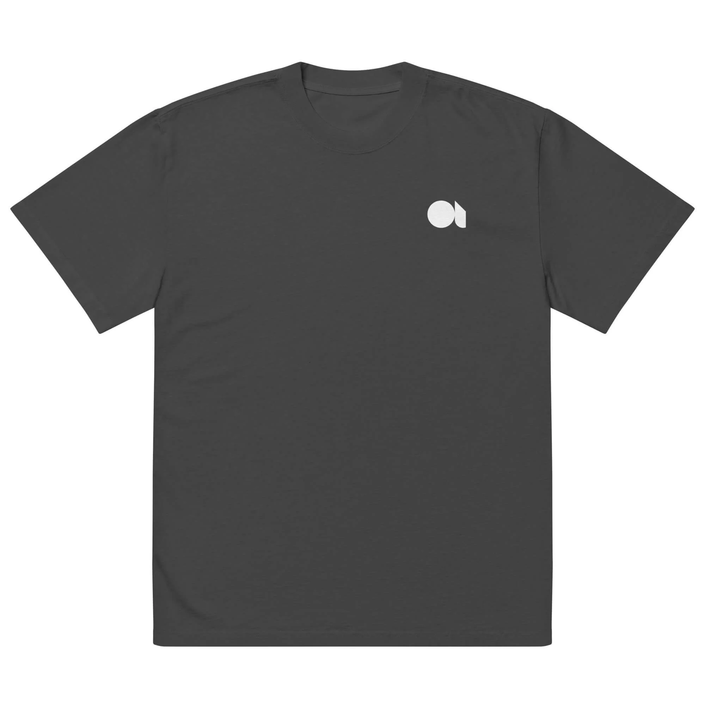
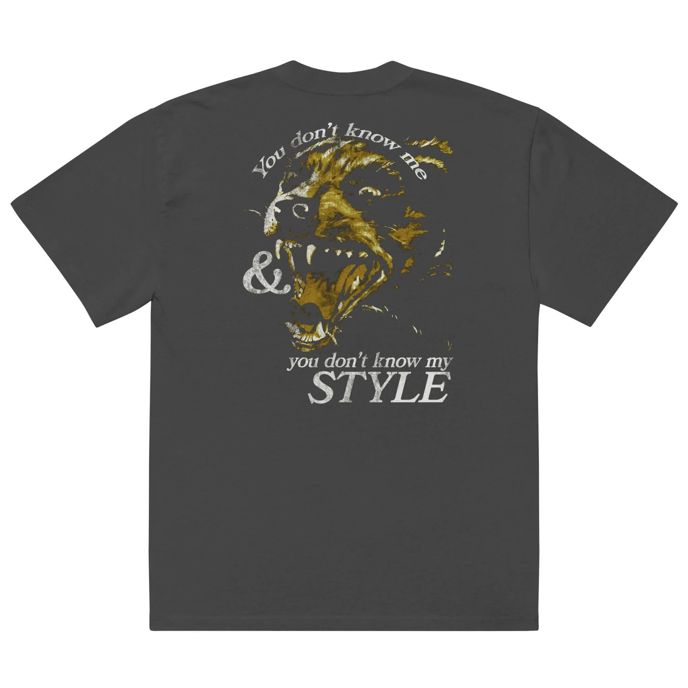
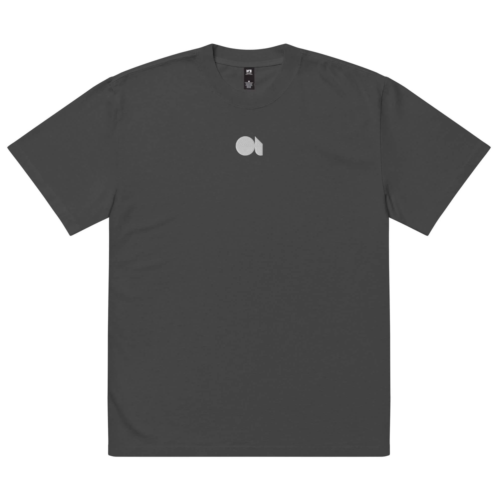
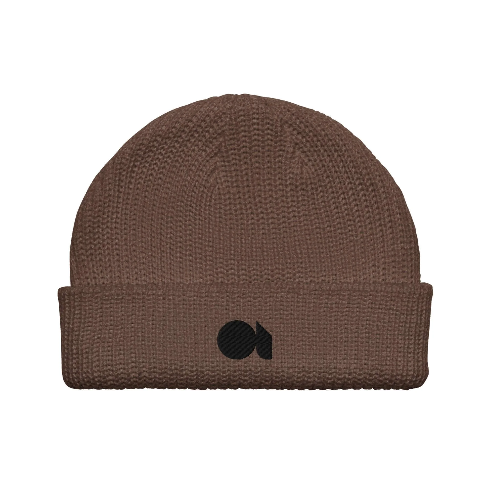
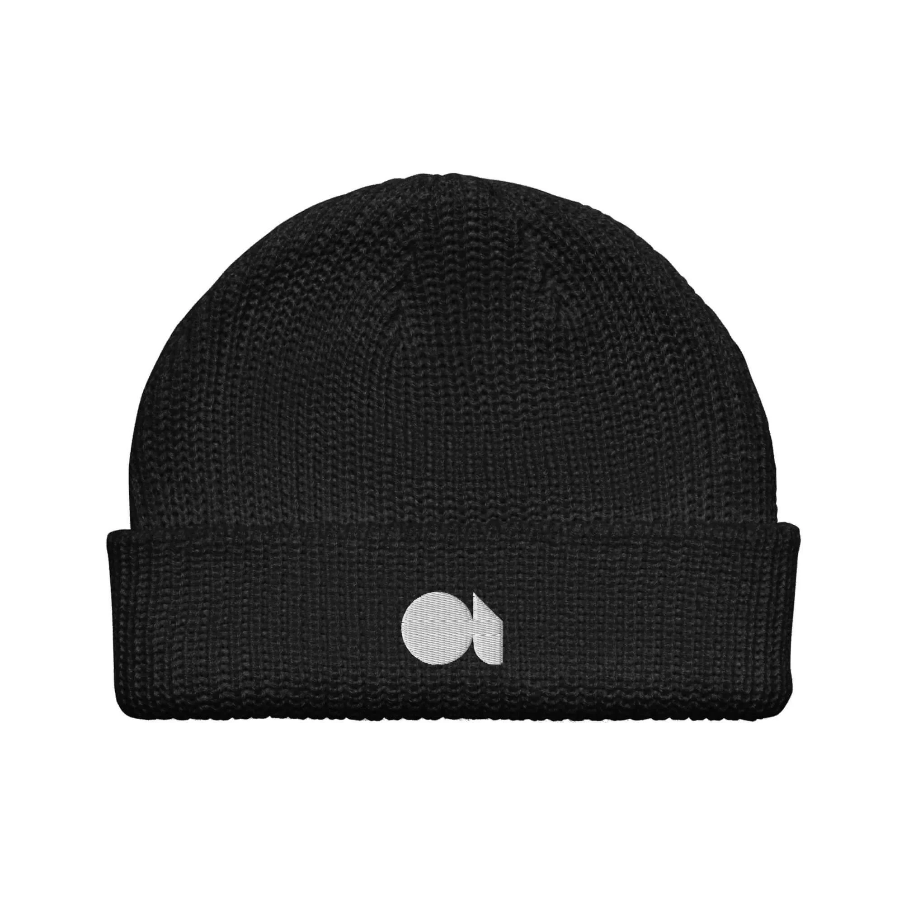
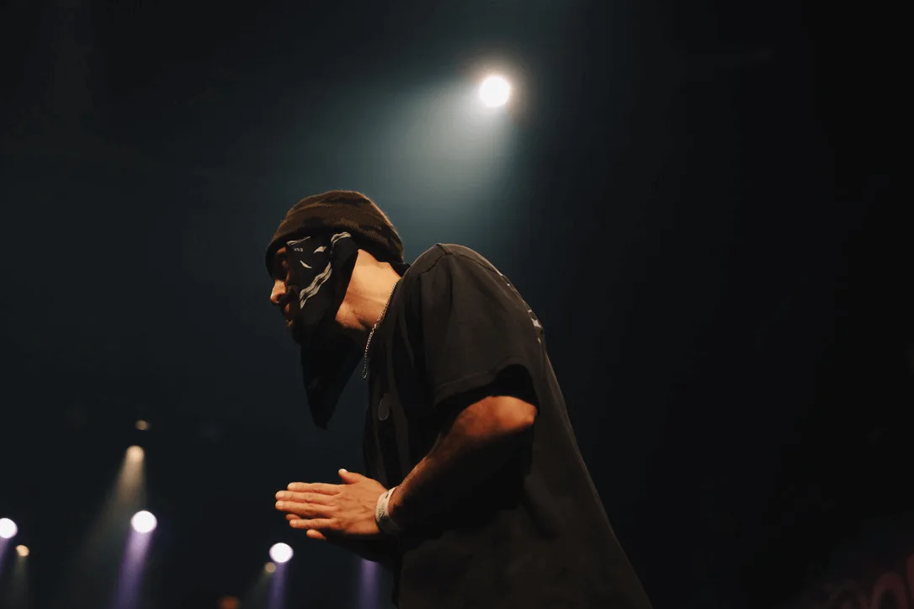

From inside the culture
Brand, merch, content, and community I've run solo since 2020. Breaking culture on my own terms.
complexbreaks.com ↗Breaking culture lives in circles. Cyphers, jams, sessions. Most of it never gets documented. When it does, it gets packaged for social media or filtered through someone outside the culture.
I started Complex Breaks to tell my own story of breaking. No algorithm, no company brand, no sponsor voice. One person, one perspective.
Three pillars, one line: shop, session, culture. The commerce that funds the work. The sessions that are the work. The culture that holds it together.
Built on Squarespace, on purpose. Use the simplest thing that ships. Spend the energy on the brand and the writing. Infrastructure nobody sees can wait.













I designed and run Complex Breaks end to end. The brand and logo. The photography and its curation. The merch. The writing. The system that ties a shop, a Substack, an event archive, and a donation flow into one place.
Merch funds the culture
Every hat and tee pays for the next jam to be documented. Commerce and culture aren't separate lines. One runs the other.
Use the simplest thing that ships
Squarespace. Substack. The platform doesn't matter if the brand and the writing are consistent.